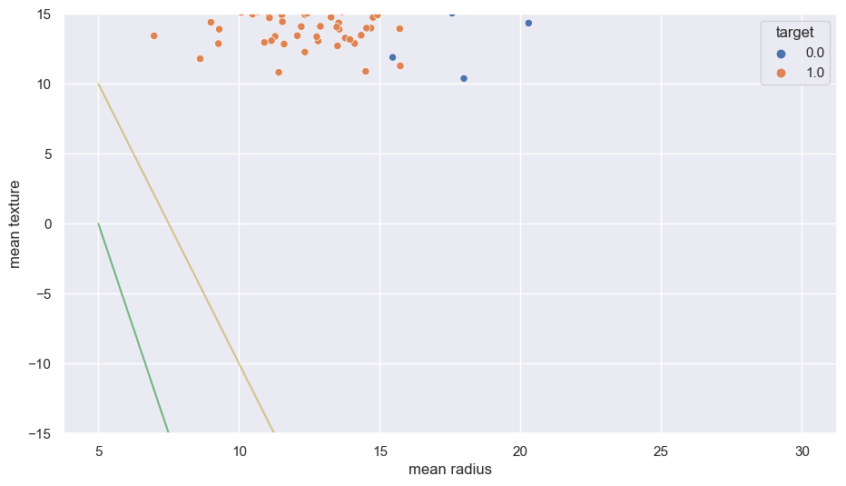
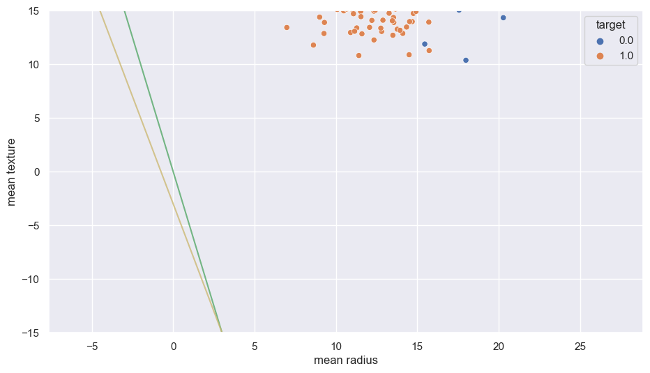

Logistic regression#
import pandas as pd
import numpy as np
from sklearn.datasets import load_breast_cancer
data = load_breast_cancer()
data['data'].shape, data['target'].shape
cancer = load_breast_cancer()
df = pd.DataFrame(np.c_[cancer['data'], cancer['target']],
columns= np.append(cancer['feature_names'], ['target']))
df.describe()
df
| mean radius | mean texture | mean perimeter | mean area | mean smoothness | mean compactness | mean concavity | mean concave points | mean symmetry | mean fractal dimension | ... | worst texture | worst perimeter | worst area | worst smoothness | worst compactness | worst concavity | worst concave points | worst symmetry | worst fractal dimension | target | |
|---|---|---|---|---|---|---|---|---|---|---|---|---|---|---|---|---|---|---|---|---|---|
| 0 | 17.99 | 10.38 | 122.80 | 1001.0 | 0.11840 | 0.27760 | 0.30010 | 0.14710 | 0.2419 | 0.07871 | ... | 17.33 | 184.60 | 2019.0 | 0.16220 | 0.66560 | 0.7119 | 0.2654 | 0.4601 | 0.11890 | 0.0 |
| 1 | 20.57 | 17.77 | 132.90 | 1326.0 | 0.08474 | 0.07864 | 0.08690 | 0.07017 | 0.1812 | 0.05667 | ... | 23.41 | 158.80 | 1956.0 | 0.12380 | 0.18660 | 0.2416 | 0.1860 | 0.2750 | 0.08902 | 0.0 |
| 2 | 19.69 | 21.25 | 130.00 | 1203.0 | 0.10960 | 0.15990 | 0.19740 | 0.12790 | 0.2069 | 0.05999 | ... | 25.53 | 152.50 | 1709.0 | 0.14440 | 0.42450 | 0.4504 | 0.2430 | 0.3613 | 0.08758 | 0.0 |
| 3 | 11.42 | 20.38 | 77.58 | 386.1 | 0.14250 | 0.28390 | 0.24140 | 0.10520 | 0.2597 | 0.09744 | ... | 26.50 | 98.87 | 567.7 | 0.20980 | 0.86630 | 0.6869 | 0.2575 | 0.6638 | 0.17300 | 0.0 |
| 4 | 20.29 | 14.34 | 135.10 | 1297.0 | 0.10030 | 0.13280 | 0.19800 | 0.10430 | 0.1809 | 0.05883 | ... | 16.67 | 152.20 | 1575.0 | 0.13740 | 0.20500 | 0.4000 | 0.1625 | 0.2364 | 0.07678 | 0.0 |
| ... | ... | ... | ... | ... | ... | ... | ... | ... | ... | ... | ... | ... | ... | ... | ... | ... | ... | ... | ... | ... | ... |
| 564 | 21.56 | 22.39 | 142.00 | 1479.0 | 0.11100 | 0.11590 | 0.24390 | 0.13890 | 0.1726 | 0.05623 | ... | 26.40 | 166.10 | 2027.0 | 0.14100 | 0.21130 | 0.4107 | 0.2216 | 0.2060 | 0.07115 | 0.0 |
| 565 | 20.13 | 28.25 | 131.20 | 1261.0 | 0.09780 | 0.10340 | 0.14400 | 0.09791 | 0.1752 | 0.05533 | ... | 38.25 | 155.00 | 1731.0 | 0.11660 | 0.19220 | 0.3215 | 0.1628 | 0.2572 | 0.06637 | 0.0 |
| 566 | 16.60 | 28.08 | 108.30 | 858.1 | 0.08455 | 0.10230 | 0.09251 | 0.05302 | 0.1590 | 0.05648 | ... | 34.12 | 126.70 | 1124.0 | 0.11390 | 0.30940 | 0.3403 | 0.1418 | 0.2218 | 0.07820 | 0.0 |
| 567 | 20.60 | 29.33 | 140.10 | 1265.0 | 0.11780 | 0.27700 | 0.35140 | 0.15200 | 0.2397 | 0.07016 | ... | 39.42 | 184.60 | 1821.0 | 0.16500 | 0.86810 | 0.9387 | 0.2650 | 0.4087 | 0.12400 | 0.0 |
| 568 | 7.76 | 24.54 | 47.92 | 181.0 | 0.05263 | 0.04362 | 0.00000 | 0.00000 | 0.1587 | 0.05884 | ... | 30.37 | 59.16 | 268.6 | 0.08996 | 0.06444 | 0.0000 | 0.0000 | 0.2871 | 0.07039 | 1.0 |
569 rows × 31 columns
from sklearn.model_selection import train_test_split
X_train, X_test, y_train, y_test = train_test_split(data.data, data.target, test_size=0.2)
data
{'data': array([[1.799e+01, 1.038e+01, 1.228e+02, ..., 2.654e-01, 4.601e-01,
1.189e-01],
[2.057e+01, 1.777e+01, 1.329e+02, ..., 1.860e-01, 2.750e-01,
8.902e-02],
[1.969e+01, 2.125e+01, 1.300e+02, ..., 2.430e-01, 3.613e-01,
8.758e-02],
...,
[1.660e+01, 2.808e+01, 1.083e+02, ..., 1.418e-01, 2.218e-01,
7.820e-02],
[2.060e+01, 2.933e+01, 1.401e+02, ..., 2.650e-01, 4.087e-01,
1.240e-01],
[7.760e+00, 2.454e+01, 4.792e+01, ..., 0.000e+00, 2.871e-01,
7.039e-02]]),
'target': array([0, 0, 0, 0, 0, 0, 0, 0, 0, 0, 0, 0, 0, 0, 0, 0, 0, 0, 0, 1, 1, 1,
0, 0, 0, 0, 0, 0, 0, 0, 0, 0, 0, 0, 0, 0, 0, 1, 0, 0, 0, 0, 0, 0,
0, 0, 1, 0, 1, 1, 1, 1, 1, 0, 0, 1, 0, 0, 1, 1, 1, 1, 0, 1, 0, 0,
1, 1, 1, 1, 0, 1, 0, 0, 1, 0, 1, 0, 0, 1, 1, 1, 0, 0, 1, 0, 0, 0,
1, 1, 1, 0, 1, 1, 0, 0, 1, 1, 1, 0, 0, 1, 1, 1, 1, 0, 1, 1, 0, 1,
1, 1, 1, 1, 1, 1, 1, 0, 0, 0, 1, 0, 0, 1, 1, 1, 0, 0, 1, 0, 1, 0,
0, 1, 0, 0, 1, 1, 0, 1, 1, 0, 1, 1, 1, 1, 0, 1, 1, 1, 1, 1, 1, 1,
1, 1, 0, 1, 1, 1, 1, 0, 0, 1, 0, 1, 1, 0, 0, 1, 1, 0, 0, 1, 1, 1,
1, 0, 1, 1, 0, 0, 0, 1, 0, 1, 0, 1, 1, 1, 0, 1, 1, 0, 0, 1, 0, 0,
0, 0, 1, 0, 0, 0, 1, 0, 1, 0, 1, 1, 0, 1, 0, 0, 0, 0, 1, 1, 0, 0,
1, 1, 1, 0, 1, 1, 1, 1, 1, 0, 0, 1, 1, 0, 1, 1, 0, 0, 1, 0, 1, 1,
1, 1, 0, 1, 1, 1, 1, 1, 0, 1, 0, 0, 0, 0, 0, 0, 0, 0, 0, 0, 0, 0,
0, 0, 1, 1, 1, 1, 1, 1, 0, 1, 0, 1, 1, 0, 1, 1, 0, 1, 0, 0, 1, 1,
1, 1, 1, 1, 1, 1, 1, 1, 1, 1, 1, 0, 1, 1, 0, 1, 0, 1, 1, 1, 1, 1,
1, 1, 1, 1, 1, 1, 1, 1, 1, 0, 1, 1, 1, 0, 1, 0, 1, 1, 1, 1, 0, 0,
0, 1, 1, 1, 1, 0, 1, 0, 1, 0, 1, 1, 1, 0, 1, 1, 1, 1, 1, 1, 1, 0,
0, 0, 1, 1, 1, 1, 1, 1, 1, 1, 1, 1, 1, 0, 0, 1, 0, 0, 0, 1, 0, 0,
1, 1, 1, 1, 1, 0, 1, 1, 1, 1, 1, 0, 1, 1, 1, 0, 1, 1, 0, 0, 1, 1,
1, 1, 1, 1, 0, 1, 1, 1, 1, 1, 1, 1, 0, 1, 1, 1, 1, 1, 0, 1, 1, 0,
1, 1, 1, 1, 1, 1, 1, 1, 1, 1, 1, 1, 0, 1, 0, 0, 1, 0, 1, 1, 1, 1,
1, 0, 1, 1, 0, 1, 0, 1, 1, 0, 1, 0, 1, 1, 1, 1, 1, 1, 1, 1, 0, 0,
1, 1, 1, 1, 1, 1, 0, 1, 1, 1, 1, 1, 1, 1, 1, 1, 1, 0, 1, 1, 1, 1,
1, 1, 1, 0, 1, 0, 1, 1, 0, 1, 1, 1, 1, 1, 0, 0, 1, 0, 1, 0, 1, 1,
1, 1, 1, 0, 1, 1, 0, 1, 0, 1, 0, 0, 1, 1, 1, 0, 1, 1, 1, 1, 1, 1,
1, 1, 1, 1, 1, 0, 1, 0, 0, 1, 1, 1, 1, 1, 1, 1, 1, 1, 1, 1, 1, 1,
1, 1, 1, 1, 1, 1, 1, 1, 1, 1, 1, 1, 0, 0, 0, 0, 0, 0, 1]),
'frame': None,
'target_names': array(['malignant', 'benign'], dtype='<U9'),
'DESCR': '.. _breast_cancer_dataset:\n\nBreast cancer wisconsin (diagnostic) dataset\n--------------------------------------------\n\n**Data Set Characteristics:**\n\n :Number of Instances: 569\n\n :Number of Attributes: 30 numeric, predictive attributes and the class\n\n :Attribute Information:\n - radius (mean of distances from center to points on the perimeter)\n - texture (standard deviation of gray-scale values)\n - perimeter\n - area\n - smoothness (local variation in radius lengths)\n - compactness (perimeter^2 / area - 1.0)\n - concavity (severity of concave portions of the contour)\n - concave points (number of concave portions of the contour)\n - symmetry\n - fractal dimension ("coastline approximation" - 1)\n\n The mean, standard error, and "worst" or largest (mean of the three\n worst/largest values) of these features were computed for each image,\n resulting in 30 features. For instance, field 0 is Mean Radius, field\n 10 is Radius SE, field 20 is Worst Radius.\n\n - class:\n - WDBC-Malignant\n - WDBC-Benign\n\n :Summary Statistics:\n\n ===================================== ====== ======\n Min Max\n ===================================== ====== ======\n radius (mean): 6.981 28.11\n texture (mean): 9.71 39.28\n perimeter (mean): 43.79 188.5\n area (mean): 143.5 2501.0\n smoothness (mean): 0.053 0.163\n compactness (mean): 0.019 0.345\n concavity (mean): 0.0 0.427\n concave points (mean): 0.0 0.201\n symmetry (mean): 0.106 0.304\n fractal dimension (mean): 0.05 0.097\n radius (standard error): 0.112 2.873\n texture (standard error): 0.36 4.885\n perimeter (standard error): 0.757 21.98\n area (standard error): 6.802 542.2\n smoothness (standard error): 0.002 0.031\n compactness (standard error): 0.002 0.135\n concavity (standard error): 0.0 0.396\n concave points (standard error): 0.0 0.053\n symmetry (standard error): 0.008 0.079\n fractal dimension (standard error): 0.001 0.03\n radius (worst): 7.93 36.04\n texture (worst): 12.02 49.54\n perimeter (worst): 50.41 251.2\n area (worst): 185.2 4254.0\n smoothness (worst): 0.071 0.223\n compactness (worst): 0.027 1.058\n concavity (worst): 0.0 1.252\n concave points (worst): 0.0 0.291\n symmetry (worst): 0.156 0.664\n fractal dimension (worst): 0.055 0.208\n ===================================== ====== ======\n\n :Missing Attribute Values: None\n\n :Class Distribution: 212 - Malignant, 357 - Benign\n\n :Creator: Dr. William H. Wolberg, W. Nick Street, Olvi L. Mangasarian\n\n :Donor: Nick Street\n\n :Date: November, 1995\n\nThis is a copy of UCI ML Breast Cancer Wisconsin (Diagnostic) datasets.\nhttps://goo.gl/U2Uwz2\n\nFeatures are computed from a digitized image of a fine needle\naspirate (FNA) of a breast mass. They describe\ncharacteristics of the cell nuclei present in the image.\n\nSeparating plane described above was obtained using\nMultisurface Method-Tree (MSM-T) [K. P. Bennett, "Decision Tree\nConstruction Via Linear Programming." Proceedings of the 4th\nMidwest Artificial Intelligence and Cognitive Science Society,\npp. 97-101, 1992], a classification method which uses linear\nprogramming to construct a decision tree. Relevant features\nwere selected using an exhaustive search in the space of 1-4\nfeatures and 1-3 separating planes.\n\nThe actual linear program used to obtain the separating plane\nin the 3-dimensional space is that described in:\n[K. P. Bennett and O. L. Mangasarian: "Robust Linear\nProgramming Discrimination of Two Linearly Inseparable Sets",\nOptimization Methods and Software 1, 1992, 23-34].\n\nThis database is also available through the UW CS ftp server:\n\nftp ftp.cs.wisc.edu\ncd math-prog/cpo-dataset/machine-learn/WDBC/\n\n|details-start|\n**References**\n|details-split|\n\n- W.N. Street, W.H. Wolberg and O.L. Mangasarian. Nuclear feature extraction \n for breast tumor diagnosis. IS&T/SPIE 1993 International Symposium on \n Electronic Imaging: Science and Technology, volume 1905, pages 861-870,\n San Jose, CA, 1993.\n- O.L. Mangasarian, W.N. Street and W.H. Wolberg. Breast cancer diagnosis and \n prognosis via linear programming. Operations Research, 43(4), pages 570-577, \n July-August 1995.\n- W.H. Wolberg, W.N. Street, and O.L. Mangasarian. Machine learning techniques\n to diagnose breast cancer from fine-needle aspirates. Cancer Letters 77 (1994) \n 163-171.\n\n|details-end|',
'feature_names': array(['mean radius', 'mean texture', 'mean perimeter', 'mean area',
'mean smoothness', 'mean compactness', 'mean concavity',
'mean concave points', 'mean symmetry', 'mean fractal dimension',
'radius error', 'texture error', 'perimeter error', 'area error',
'smoothness error', 'compactness error', 'concavity error',
'concave points error', 'symmetry error',
'fractal dimension error', 'worst radius', 'worst texture',
'worst perimeter', 'worst area', 'worst smoothness',
'worst compactness', 'worst concavity', 'worst concave points',
'worst symmetry', 'worst fractal dimension'], dtype='<U23'),
'filename': 'breast_cancer.csv',
'data_module': 'sklearn.datasets.data'}
from sklearn.linear_model import LogisticRegression
log_reg = LogisticRegression()
log_reg.fit(X_train, y_train)
/Users/yerassyl/.pyenv/versions/3.10.13/lib/python3.10/site-packages/sklearn/linear_model/_logistic.py:460: ConvergenceWarning: lbfgs failed to converge (status=1):
STOP: TOTAL NO. of ITERATIONS REACHED LIMIT.
Increase the number of iterations (max_iter) or scale the data as shown in:
https://scikit-learn.org/stable/modules/preprocessing.html
Please also refer to the documentation for alternative solver options:
https://scikit-learn.org/stable/modules/linear_model.html#logistic-regression
n_iter_i = _check_optimize_result(
LogisticRegression()In a Jupyter environment, please rerun this cell to show the HTML representation or trust the notebook.
On GitHub, the HTML representation is unable to render, please try loading this page with nbviewer.org.
LogisticRegression()
# The estimated coefficients will all be around 1:
#print(log_reg.coef_)
# Those values, however, will show that the second parameter
# is more influential
l = list(np.std(X_test, 0)*log_reg.coef_[0])
l = [abs(val) for val in l]
l
cols = list(df.columns[:-1])
cols
df = pd.DataFrame.from_dict({'features': cols,
'coefs': l})
df
mean perimeter
mean area
Cell In[4], line 17
mean perimeter
^
SyntaxError: invalid syntax
%pylab inline
import seaborn as sns
sns.set(rc={'figure.figsize':(11,6)})
sns.scatterplot(x='mean radius', y='mean texture', hue='target', data=df.sample(300, random_state=1))
%pylab is deprecated, use %matplotlib inline and import the required libraries.
Populating the interactive namespace from numpy and matplotlib
import numpy as np
sns.scatterplot(x='mean radius', y='mean texture', hue='target', data=df.sample(300, random_state=1))
lines = [([0, -5], 'g'),
([-3, -4], 'y')]
k = -6
b = 30
x = np.linspace(5, 30, 2)
y = k*x + b
plt.plot(x, y, color='g', alpha=0.8)
k = -4
b = 30
x = np.linspace(5, 30, 10)
y = k*x + b
plt.plot(x, y, color='y', alpha=0.8)
plt.ylim((-15, 15));

import numpy as np
sns.scatterplot(x='mean radius', y='mean texture', hue='target', data=df.sample(300, random_state=1))
lines = [([0, -5], 'g'),
([-3, -4], 'y')]
for line in lines:
x = np.linspace(-6, 6, 100)
y = line[0][0] + x*line[0][1]
plt.plot(x, y, color=line[1], alpha=0.8)
plt.ylim((-15, 15));

from sklearn.metrics import accuracy_score
acc = []
for line in lines:
pred = ds['skewness'] - line[0][1]*ds['variance'] - line[0][0] < 0
acc.append(accuracy_score(ds['class'], pred))
print(f"Точность для зеленой прямой: {acc[0]:.3}")
print(f"Точность для желтой прямой: {acc[1]:.3}")
[2.6927351280215306, 2.528166393628669, 10.817329919561091, 10.102101175564226, 0.0005055316339854576, 0.00816570454160902, 0.014890475424287642, 0.002847278230962775, 0.0015148795697778922, 8.201507779793536e-05, 0.003174560762397326, 0.17882065764613644, 0.02635444247671261, 3.800703235568071, 8.949980109366894e-06, 0.0005175405541937549, 0.0009484602721457914, 5.562380477419086e-05, 7.670830277661985e-05, 5.423948907396026e-06, 3.485695788623512, 3.9681595789777533, 8.969687150981033, 5.334002985275836, 0.001629154536497331, 0.08103196730102924, 0.11738317452703656, 0.010238104020179037, 0.0102318595217241, 0.0009596172506174203]
z = np.linspace(-10, 10, 100)
sigma = 1/(1+np.exp(-z))
plt.plot(z, sigma)
plt.ylim(-0.1, 1.1)
plt.xlabel('$z$')
plt.title('График логистической функции $\sigma(z)$');
from scipy.stats import norm
np.random.seed(10)
mean_0 = 0.7
std_0 = 0.3
mean_1 = -0.5
std_1 = 0.4
nsamples_0 = 100
nsamples_1 = 100
samples_0 = mean_0 + sqrt(std_0)*np.random.randn(nsamples_0)
samples_1 = mean_1 + sqrt(std_1)*np.random.randn(nsamples_1)
x_0 = np.linspace(mean_0 - 5*std_0, mean_0 + 5*std_0, 100)
x_1 = np.linspace(mean_1 - 5*std_1, mean_1 + 5*std_1, 100)
from sklearn.linear_model import LogisticRegression
clf = LogisticRegression().fit(np.hstack((samples_0, samples_1)).reshape(-1, 1),
np.hstack(([1]*nsamples_0, [0]*nsamples_1)))
theta_0 = clf.intercept_[0]
theta_1 = clf.coef_[0][0]
x = np.linspace(mean_1 - 5*std_1, mean_0 + 5*std_0)
sigma = 1/(1 + np.exp(-(theta_0 + theta_1*x)))
draw_samples = 25
plt.scatter(x = np.random.choice(samples_0, draw_samples), y = [0]*draw_samples, color='red', s=20)
plt.plot(x_0, norm.pdf(x_0, mean_0, std_0), color='red', alpha=0.6)
plt.scatter(x = np.random.choice(samples_1, draw_samples), y = [0]*draw_samples, color='blue', s=20)
plt.plot(x_1, norm.pdf(x_1, mean_1, std_1), color='blue', alpha=0.6)
plt.plot(x, sigma, color='orange')
plt.axhline(0.5, color='black', linestyle='--')
plt.axvline(-theta_0/theta_1, color='black', linestyle='--')
plt.text(-theta_0/theta_1 + 0.2, -0.1, '$P(y=1|x) > 0.5$')
plt.text(-theta_0/theta_1 - 1.3, -0.1, '$P(y=1|x) < 0.5$')
plt.title('Разделение двух распределений')
fig, ax = plt.subplots(1, 2, figsize=(16, 5))
h = np.linspace(0.01, 0.99, 100)
ax[0].plot(h, -np.log(1 - h))
ax[0].set_xlabel('$h_{\\theta}(x)$')
ax[0].set_title('$y = 0, -\\log (1-h_\\theta(x^{(i)}))$')
ax[1].plot(h, -np.log(h))
ax[1].set_xlabel('$h_{\\theta}(x)$')
ax[1].set_title('$y = 1, -\\log h_\\theta(x^{(i)})$');На левом графике хорошо видно, что в случае, когда истинный класс ($y = 0$), то данная функция потерь награждает нас, когда гипотеза $h_\theta(x) \rightarrow 0$ и штрафует, когда $h_\theta(x) \rightarrow 1$. В случае другого класса $(y = 1$) все с точностью до наоборот. Функция потерь награждает нас при $h_\theta(x) \rightarrow 1$ и штрафует при $h_\theta(x) \rightarrow 0$.
Посмотрим как выглядит сумма подобных штрафов для всей обучающей выборки в зависимости от параметра $\theta$.
def logloss(theta, x, y):
n = len(y)
def sigma(z):
return 1/(1 + np.exp(-z))
return -1/n*np.sum(y*np.log(sigma(theta*x)) + (1-y)*np.log(1 - sigma(theta*x)))
x = ds['variance']
y = ds['class']
theta = np.linspace(-10, 10, 100)
L = [logloss(th, x, y) for th in theta]
plt.plot(theta, L)
plt.xlabel('$\\theta$')
plt.ylabel('$L(\\theta)$')
plt.title('График логистической функции потерь для задачи классификации');
def sigma(z):
return 1/(1+np.exp(-z))
def grad(y, X, theta):
n = y.shape[0]
return 1/n * X.transpose() @ (sigma(X @ theta) - y)
def L(y, X, theta):
n = y.shape[0]
return -1/(n)*np.sum(y*np.log(sigma(X @ theta)) + (1 - y)*np.log(1 - sigma(X @ theta)))
def fit(y, X, theta_0, alpha=0.001, nsteps = 100):
theta = np.copy(theta_0)
loss = [L(y, X, theta)]
for i in range(nsteps):
theta -= alpha*grad(y, X, theta)
loss.append(L(y, X, theta))
return loss, theta
X = ds[['variance', 'skewness']]
y = ds['class']
X_mean = np.mean(X, axis=0)
X_std = np.std(X, axis=0)
norm_X = (X - X_mean)/X_std
n = len(X)
X = np.hstack((np.ones((n, 1)), norm_X))
m = 2
theta_0 = np.zeros(m + 1)
loss_history, theta_star = fit(y, X, theta_0, alpha=1e-2, nsteps=5000)
plt.plot(loss_history)
plt.xlabel('$k$')
plt.ylabel('$L(\\theta^{(k)})$')
plt.title('Кривая обучения');
theta_star
sns.scatterplot(x='variance', y='skewness', hue='class', data=ds.sample(500));
x_tmp = np.linspace(-6, 6, 100)
y_tmp = - (theta_star[0] + (x_tmp - X_mean[0])/X_std[0]*theta_star[1])/theta_star[2]
plt.plot(x_tmp, X_std[1]*y_tmp + X_mean[1] , color="green", alpha=0.8, linestyle='--')
plt.ylim((-15, 15));
y_pred = X @ theta_star > 0
logreg_score = accuracy_score(y, y_pred)
print(f'Logistic Regression accuracy: {logreg_score:.3f}')
import numpy as np
from sklearn.linear_model import LogisticRegression
from sklearn.inspection import permutation_importance
# initialize sample (using the same setup as in KT.'s)
X = np.random.standard_normal((100,3)) * [1, 4, 0.5]
y = (3 + X.sum(axis=1) + 0.2*np.random.standard_normal()) > 0
# fit a model
model = LogisticRegression().fit(X, y)
# compute importances
model_fi = permutation_importance(model, X, y)
model_fi['importances_mean']
array([0.018, 0.352, 0. ])
import os
os.getcwd()
'C:\\Users\\ASUS'